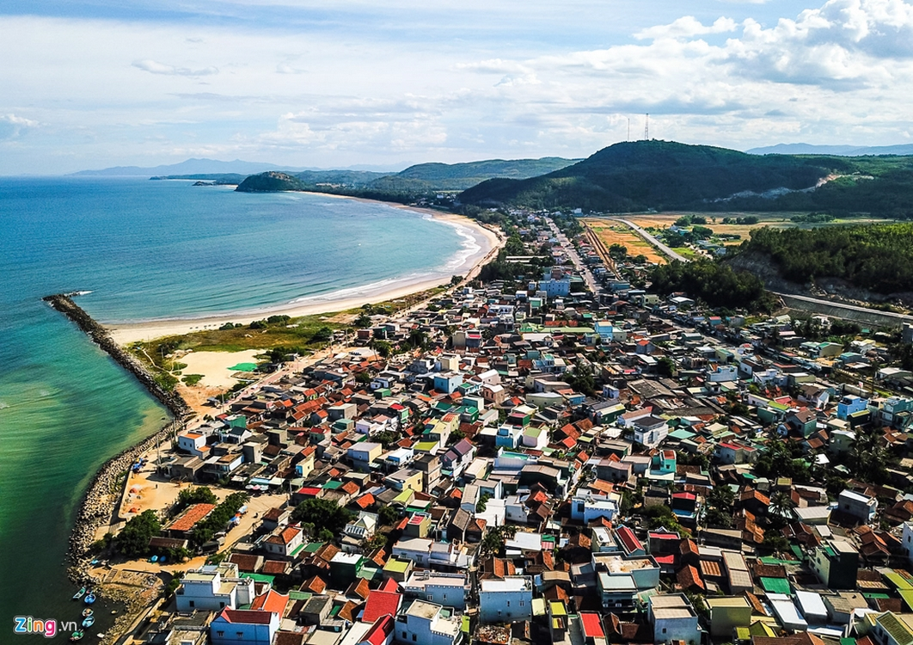
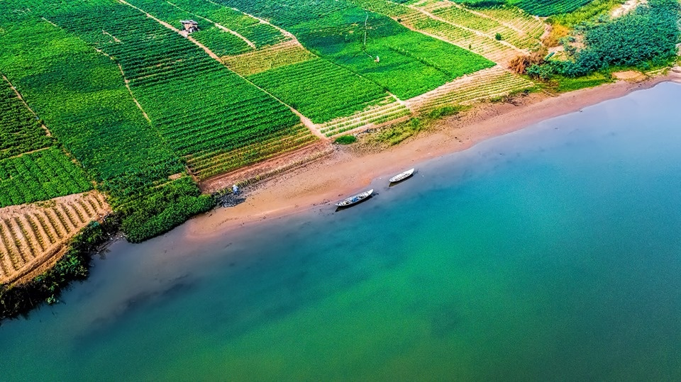
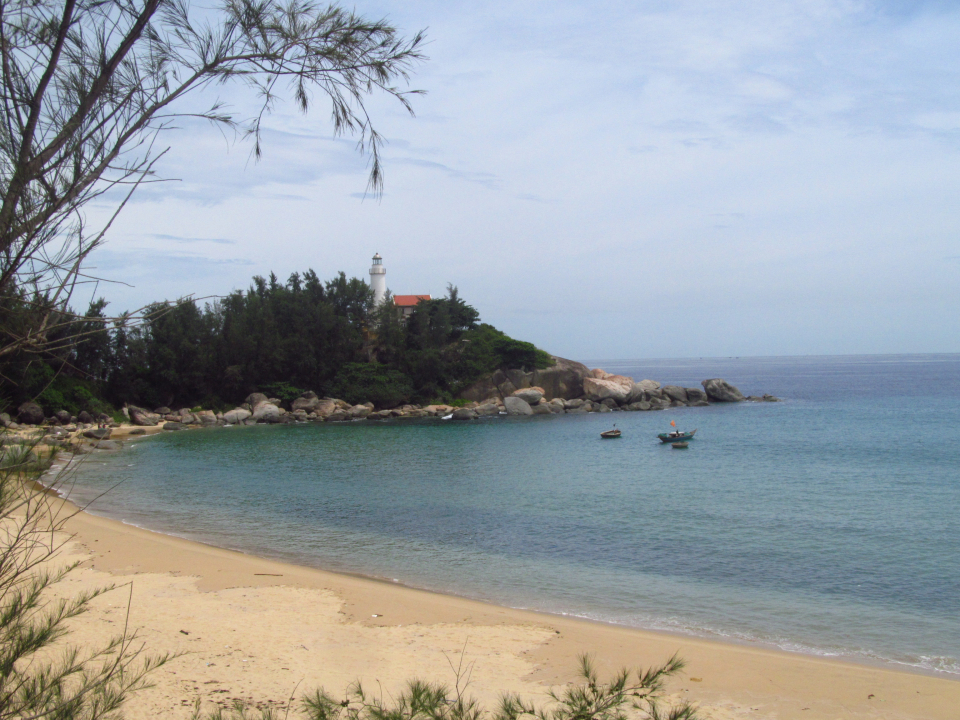
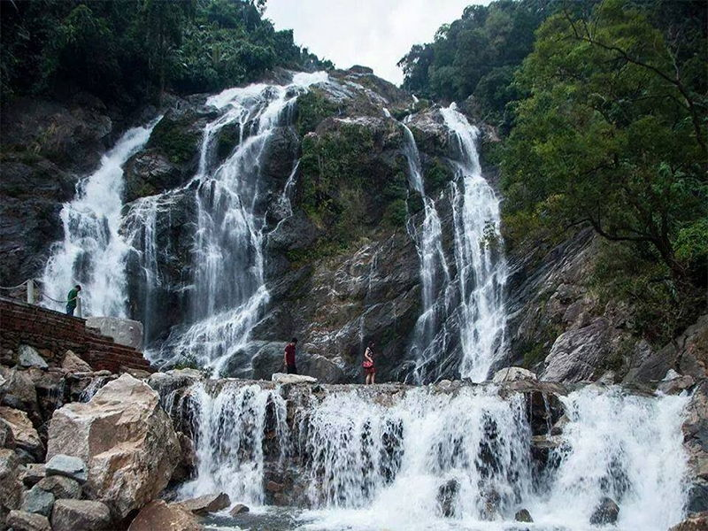

Bãi biển Sa Huỳnh-Đức Phổ
Sa Huỳnh là một địa danh thuộc địa phận phường Phổ Thạnh của thị xã Đức Phổ, cực nam tỉnh Quảng Ngãi và cũng là tên một địa điểm khảo cổ học, nơi người ta đã tìm thấy các dấu vết của văn hóa Sa Huỳnh lần đầu được tìm thấy vào năm 1909 bởi nhà khảo cổ học người Pháp M.Vinet. Trước đây, địa danh này có tên là Sa Hoàng (bãi cát vàng), song vì chữ hoàng trùng tên với chúa Nguyễn Hoàng nên đọc lái lại thành Sa Huỳnh.
 Toàn cảnh biển Sa Huỳnh
Cổ Lũy Cô Thôn-TP.Quảng Ngãi
Cổ Lũy cô thôn (Cổ Lũy thôn côi) là một trong mười hai danh thắng của tỉnh Quảng Ngãi. Đây là một cảnh đẹp hiếm thấy, hội đủ các yếu tố sông biển, núi non, làng mạc. Xa ồn ào nhân thế mà không dứt bỏ cõi đời. Ở nơi quạnh vắng nhưng chẳng để mình đơn độc. Hòa vào thiên nhiên mà không chìm khuất, u trầm.
 Những vuông tôm trong làng Cổ Lũy Cô Thôn
Những vuông tôm trong làng Cổ Lũy Cô Thôn
Sông Trà Khúc - TP.Quảng Ngãi
Tên "Trà Khúc" mang giọng Chiêm vì "Trà" có gốc từ jaya trong tiếng Phạn, và là một trong bốn họ chính thống của các vua Chiêm: On, Ma, Trà, Chế.Cặp núi Thiên Ấn và sông Trà Khúc là biểu tượng của tỉnh Quảng Ngãi. Bài ca Nhớ Đàn Xe Nước của tác giả Văn Đông, trong đó có câu: Ta nhớ quê ta có núi Ấn sông Trà.
 Thu hoạch dưa hấu ở giữa Sông Trà
Biển dung quất-Bình Sơn
Dung Quất là địa danh gắn với nhà máy lọc dầu và cảng dầu lớn nhất Việt Nam, nhưng Dung Quất còn có biển rất đẹp và thơ mộng. Vịnh Dung Quất được bao bọc bởi dãy núi Nam Trâm và mũi Coco che chắn gió nên biển quanh năm hiền hòa.
 Vịnh Dung Quất
Thác Trắng-Minh Long
Thác Trắng Minh Long hay còn gọi là thác Trắng, điểm dã ngoại cuối tuần lý tưởng cho người địa phương và là ‘địa chỉ vàng’ dành cho dân phượt muốn khám phá vẻ đẹp hoang sơ tự nhiên của Quảng Ngãi. Thác nằm lọt thỏm trong vùng núi Trường Sơn trùng trùng điệp điệp ở xã Thanh An, huyện Minh Long, cách trung tâm thành phố chừng 23km theo hướng Tây Nam.
 Dòng thác Trắng ào ạt tuôn trào